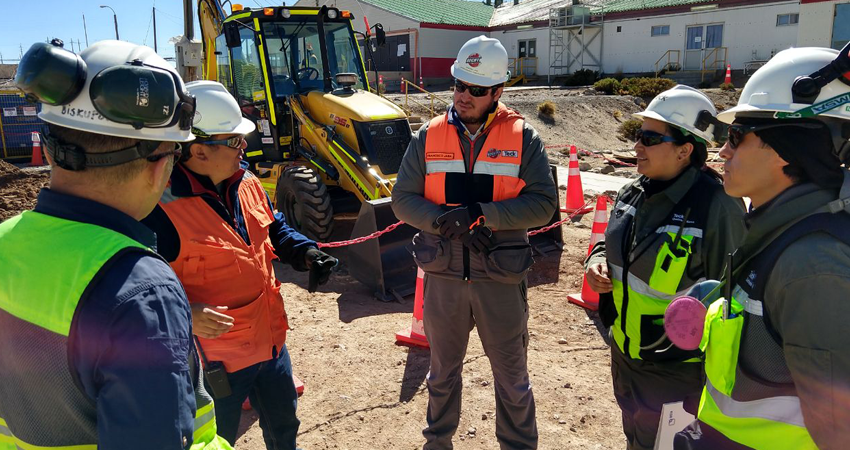
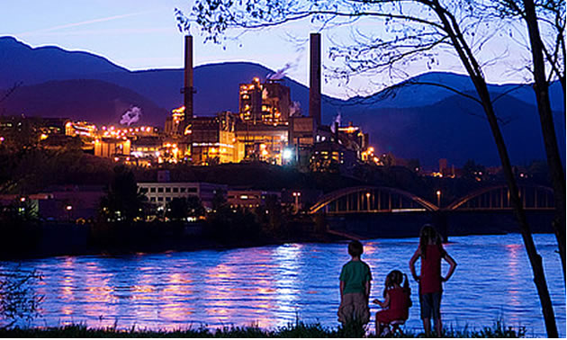
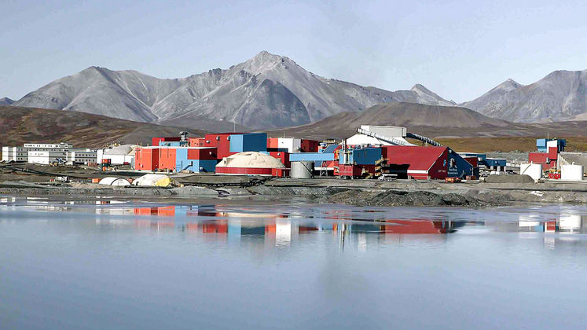
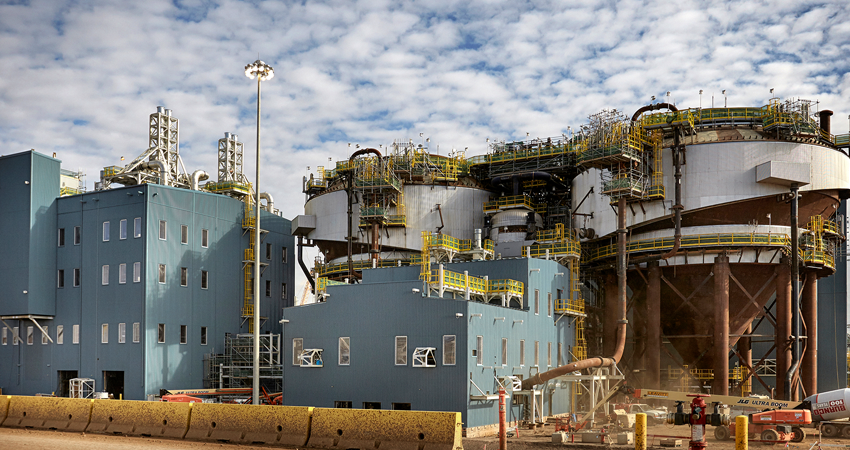

Over more than 100 years, Teck has grown into one of the world’s leading diversified natural resource companies, committed to responsible mining and mineral development. Over that time, our people have helped to build communities, create jobs and drive innovation, making our industry more sustainable.
Featured sustainable mine sites:
Quebrada Blanca Phase 2 project (QB2)
Quebrada Blanca Phase 2 is a low-cost, long-life copper project being built by Teck and the project partners in northern Chile.
Trail Operations
Trail Operations is one of the world’s largest fully integrated zinc and lead smelting and refining complexes, located in southern British Columbia.
Red Dog
Red Dog Operations is one of the world's largest zinc mines, located in northwest Alaska, USA.
Fort Hills
The Fort Hills oil sands mining and processing operation is a long-life, high-quality asset located in the Athabasca region of Alberta.
Recent sustainable news
- At Teck’s Chilean operations, where the majority of electricity is currently generated by conventional sources like coal and natural gas, increasing our use of renewable energy brings opportunities to greatly reduce greenhouse gas (GHG) emissions, while creating potential for long-term savings on energy costs. In 2020, we set ambitious goals for our Chilean operations - to procure 50% of our electricity from clean energy by 2025, and 100% by 2030. These goals and others act as short-term milestones towards our aspiration to achieve carbon neutrality by 2050. News Release Source
- In 2018 Teck partnered with the BC Parks Foundation to harness the enthusiasm of residents and visitors for B.C.’s natural beauty in helping catalogue the biodiversity of the province’s outdoor spaces. Little information exists on biodiversity within B.C.’s parks, in part because of the size of the system and the costs of collecting this data. The BC Parks Foundation began the BC Parks iNaturalist project with Teck’s support, and in partnership with BC Parks and researchers from SFU and UVIC. The project aimed to take on the challenge of cataloguing the variety of plants and animals that call B.C. home. News Release Source
- Controlled blasts using explosives happen daily at our steelmaking coal operations to access new steelmaking coal seams. However, nitrate in the explosives can dissolve in groundwater and end up in the environment. In high enough concentrations, nitrate can have adverse impacts on water quality. To stop this from occurring, Teck partnered with our explosives and plastics providers, to pioneer a new solution, and prevent explosive materials from coming into contact with water. Our steelmaking coal operations use two types of explosives: Ammonium Nitrate/Fuel Oil (ANFO), used in dry conditions, and emulsion, used in wet conditions. Historically, blasthole liners have only been used with dry explosives, as emulsion explosives used in wet conditions are less reactive to water. However, new research has shown that wet explosives can also introduce nitrate into the environment. News Release Source